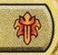

Anatomy of a Card


Here we have a classic magic card. This is a creature spell card called Korvold, Fae-Cursed King. We're going
to break this card down into bit sized chunks to help you in your understanding of Magic: The Gathering.
1. Mana Cost

This is the most important part of every magic card. This is how much the card costs.
In this particular cost, we need one black mana, one red mana and one green mana.
The 2 in grey is generic mana, meaning any colour can be used to pay for the remaining two.
In total this spell costs 5 mana to cast. Another way of saying this is that the total converted mana cost
of this card is 5 mana.
2. Card Type

This section tells us the type and sub-type of the card. In this example we have a legendary creature card,
with a sub-type of Dragon Noble.
3. Rules Text

After mana cost and card type, this is THE most important part of the card. This is the rules text
and tells you what the card does, what its abilities are and anything else the card can do. Take your time
to read and understand this part of every card you draw!
4. Power & Toughness

This part of the card is only found on creature cards. On the left you have the creatures power, this is how
much damage it can deal. On the left is the creatures toughness, how much damage the creature can take. When
any creatures toughness is brought to 0 or lower it dies and is sent to the graveyard.
5. Flavour Text

Flavour text is always found below the rules text and in italics. It can be a quote, a saying or a line from
a book. It's purpose is to contextualise or give some lore or background to a card. It's often tied to the
storyline from where the particular card comes from.
6. Artwork

This the artwork which illustrates a card.
7. Name

The name of the card, pretty straight forward.
8. Rarity Symbol

The rarity symbol signifies how rare the card is. Korvold, Fae-Cursed King is a mythic rare card, so you
know it is a pretty powerful card. Gold is rare, slightly less powerful but can still be pretty strong.
Blue-ish grey is uncommon, and black symbol is common.